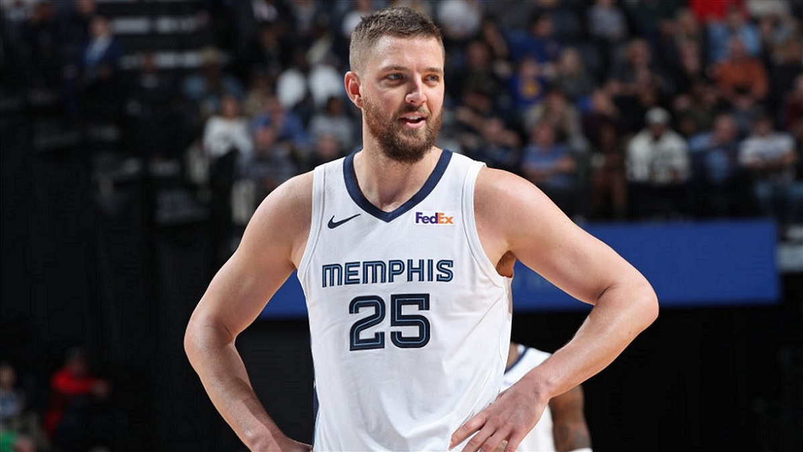
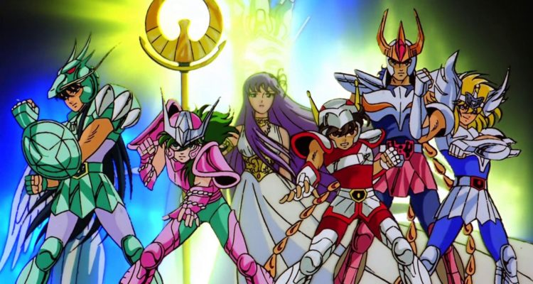

GLOBAL

DEPORTES

Pesar en el automovilismo:
piloto dominicana falleció
tras accidente en plena carrera en Brasil

David Beckham,
la "cara bonita" del Manchester United

"Se decidió la postergación": miembro más veterano del COI confirma modificaciones a Tokio 2020

Primer jugador de NBA con
coronavirus se redime:
Primer jugador de NBA con
coronavirus se redime:
anuncia millonaria donación tras desubicada broma
ENTRETENIMIENTO

Backstreet Boys y su exitosa gira alrededor del mundo.

Autor de "Juego de Tronos" aprovecha la cuarentena para terminar el próximo libro.

"Los Caballeros del Zodiaco" llegan a Netflix con todas sus temporadas desde el inicio.

"Es un sueño típico de infancia": Natalie Portman habla sobre su nueva película espacial.
EDUCACIÓN
 Educación a distancia y la falta de recursos para los estudiantes con gratuidad de la E. Superior.
Educación a distancia y la falta de recursos para los estudiantes con gratuidad de la E. Superior.
Educación a distancia y la falta de recursos para los estudiantes con gratuidad de la E. Superior.
Educación a distancia y la falta de recursos para los estudiantes con gratuidad de la E. Superior.